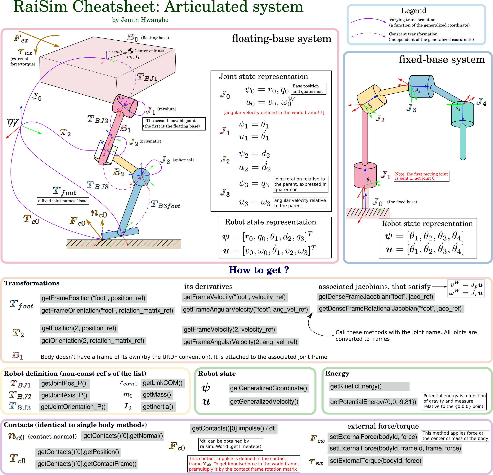

Education
Robot dynamics - Spring semester
{kind=link}
The course introduces dynamics of rigid articulated system, a system composed of multiple bodies and joints. We are mainly concerned with forward dynamics of articulated systems for simulation. The main tool of the course is recursive methods (ABA, CRBA and RNE) which are purely Newtonian formalism. But we will also briefly talk about other approaches (e.g., Lagrangian formalism). We will also study non-smooth dynamics of contacts.
Keywords: Robot kinematics, whole-body control, Newton-Euler equation, inverse-dynamics control, Euler-Lagrange equation, project Newton-Euler equation, Composite rigid body algorithm, Recursive Newton Euler Algorithm, Articulated body algorithm
Learning-based control - Fall semester
This course introduces general concepts for learning-based control with a special focus on deep reinforcement learning. The theories and methodologies taught in this class are aiming at solving very complicated nonlinear, nonsmooth and hybrid systems that typical control methods cannot solve. All methods extract necessary information through interactions with the environment and store it in a general and scalable function approximator, such as a deep neural network. In order to build a solid theoretical foundation, this lecture first introduces basic concepts of optimal control, such as Bellman’s optimality condition and HJB equation. Then, the lecture will focus on reinforcement learning, from basic concepts to recent research trends. Many problems are formulated as a Markov Decision Process (MDP) but a few systems that cannot be modeled as such will also be introduced. There will be multiple programming exercises throughout the course.
Keywords: Learning-based control, Deep reinforcement learning, Markov Decision Process, Bellman’s optimality condition